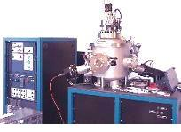

Dielectric
Aside
from the passivation and glass layer deposited over the surface of the
die to protect it from mechanical damage and corrosion,
dielectric layers
are also used for
isolating
components or structures in the active circuit from each other, and as
dielectric structures for MOS transistors, capacitors, and the like.
Other uses
for dielectric layers include: 1)
masking
for diffusion and ion implant processes; 2)
diffusion
from doped oxides; 3)
overcoating
of doped films to prevent dopant loss; 4)
gettering
of impurities; and 5) mechanical and chemical
protection.
Silicon
dioxide
(SiO2), the
oxide of silicon, is the
most
widely used dielectric in wafer fabrication. There are many ways
to grow silicon dioxide on the surface of silicon, but it is most
often done through a process known as
thermal
oxidation.
Thermal oxidation consists of exposing the silicon to
oxidizing
agents such
as water and oxygen at
elevated
temperatures. This process has good control over the thickness and
properties of the SiO2 layer.
|
|
|
Fig.
1. Example of a
4-Stack Diffusion Furnace that can be used
for Thermal Oxidation of SiO2 |
The mechanism
by which SiO2 is formed from silicon has been fully understood over the
years. A newly exposed silicon surface quickly oxidizes to form an
SiO2 film on its surface. As oxidation progresses, silicon is
consumed
and the SiO2 layer
thickens,
moving the Si-SiO2 interface
deeper
into the silicon substrate.
The
process of thermal oxidation can be classified as either dry or wet
oxidation. In
dry oxidation, the moxidizing agent is oxygen, and
is governed by the following reaction: Si (solid) + O2 (vapor) =
SiO2 (solid). In
wet oxidation,
the main oxidizing agent is water, and is governed by the following
reaction: Si (solid) + H2O (vapor) =
SiO2 (solid) + 2H2.
There are
other commonly-used dielectric materials aside from SiO2.
Silicon dioxide doped with phosphorus (commonly referred to as P-glass,
phospho-silicate
glass,
or PSG) is used in many applications because it inhibits diffusion of
sodium impurities and exhibits a smooth topography. Adding boron
to PSG results in
boro-phospho-silicate
glass (BPSG), which flows at lower temperatures than PSG (850C-950C for
BPSG versus 950C-1100C for PSG).
Polysilicon
with enough oxygen content is also semi-insulating and has actually been
used in circuit passivation.
Silicon
nitride
is an excellent moisture barrier while stoichiometric silicon nitride is
used in oxidation masks and for MOS gate dielectric.
These
dielectric layers are usually deposited by
sputtering
or
chemical
vapor deposition
(CVD). The layer material deposited depends on the
reactants
used during processing.

Fig.
2. A
CVD system (left) and a
sputtering system (right) which may
be used for
depositing various dielectric layers
Wafer Fab
Links:
Incoming
Wafers;
Epitaxy;
Diffusion;
Ion
Implant;
Polysilicon;
Dielectric;
Lithography/Etch;
Thin
Films;
Metallization;
Glassivation;
Probe/Trim
See Also:
Dielectric Constant;
Thermal Oxidation;
SiO2,
Si3N4
Properties;
IC
Manufacturing
HOME
Copyright
©
2001-2006
www.EESemi.com.
All Rights Reserved.